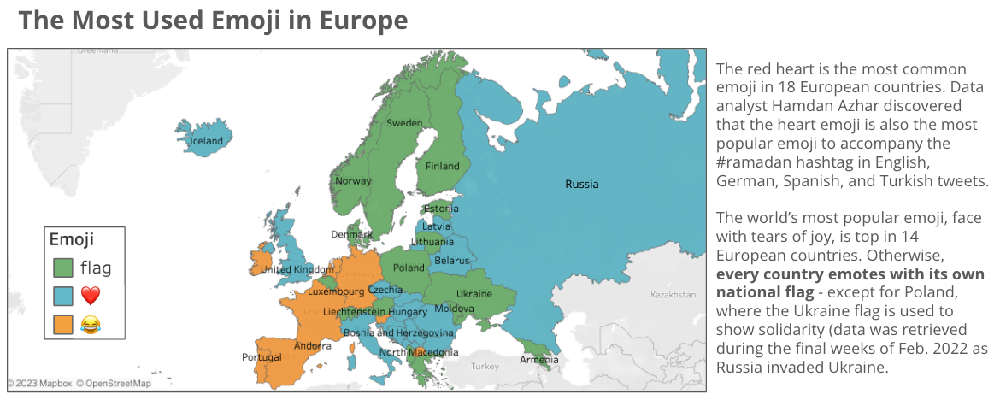

Redesign of a Poorly Made Viz:
The following viz was added to a class list of "Worst Visualizations."

Here is how I improved it:

I chose this item to refine because
during this class every time I saw a viz, the first thing I would notice are the improvements I would make. As I scrolled through the "worst" visualizations that we collected as a class, this one
stood out to me because the viz allows the user to complete fun and engaging tasks: identifying popular emojis in different countries, observing trends in emoji use across countries. It also stood
out to me because I like using color in a viz as it is effective and visually appealing, and the original viz did not use color effectively at all.
I mainly redesigned with color in mind, wanting to make sure the user can leverage their geographical knowledge more effectively. In addition, I used
Tableau. From this refinement, I learned that even though emojis are the focus of the viz and tasks, it is not effective
to represent each country's most popular emoji by the emoji itself. More broadly, I learned that the most immediate and obvious mark/channel
that you might want to use that is "on topic" for the viz might
cause more obfuscation/confusionn than enhance the user experience. For example, this viz (https://www.wsj.com/articles/tokyo-to-san-francisco-in-5-hours-if-all-goes-well-yes-11549559289) that used plane/train shapes as bars in a bar chart creates so much more confusion than necessary, and representing
the data using lines only would make the user's experience much easier and smoother.
The concept I just described of focusing on the actual task, not an idea that seems relevant but might actually confuse a user, is something I can work towards even in my everyday life. It reminds me of
mindfulness and being present - thinking of what actually needs to get done, what is really important in a given moment or situation.